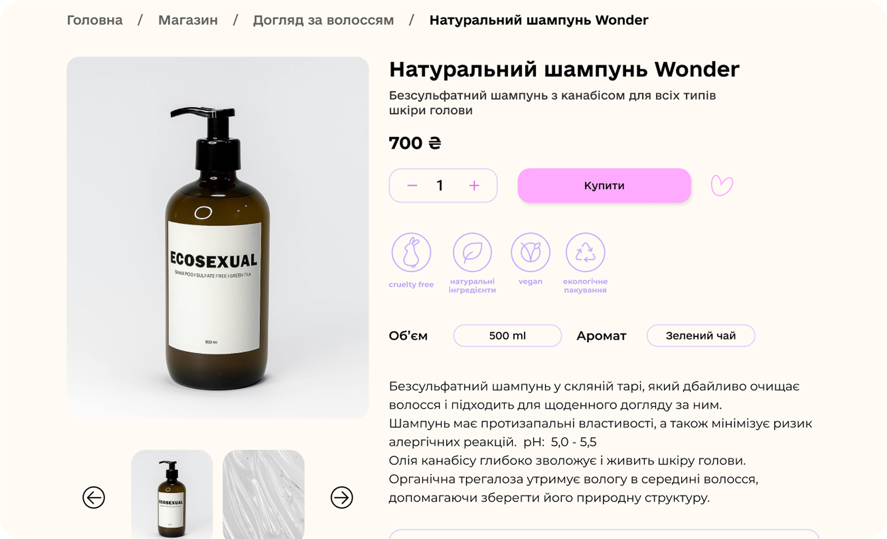
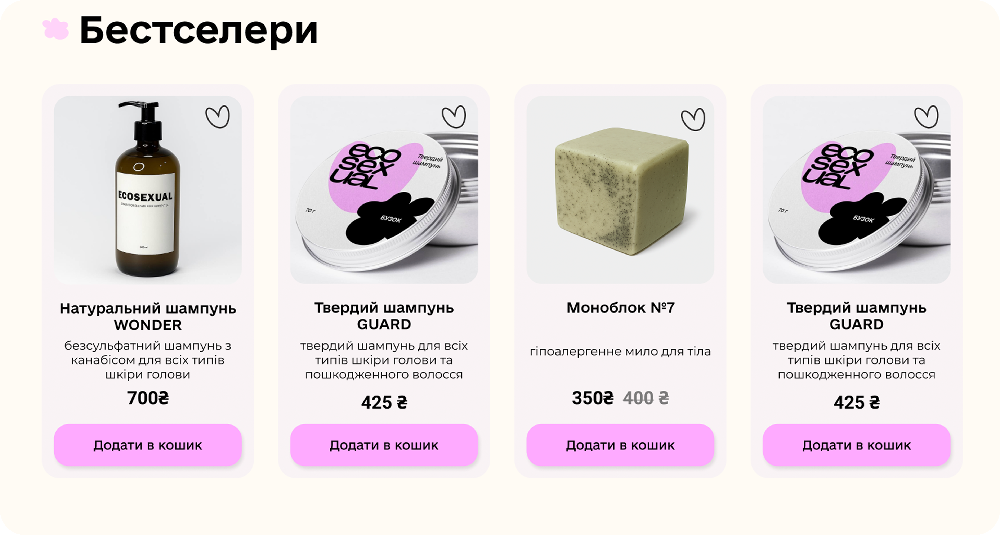
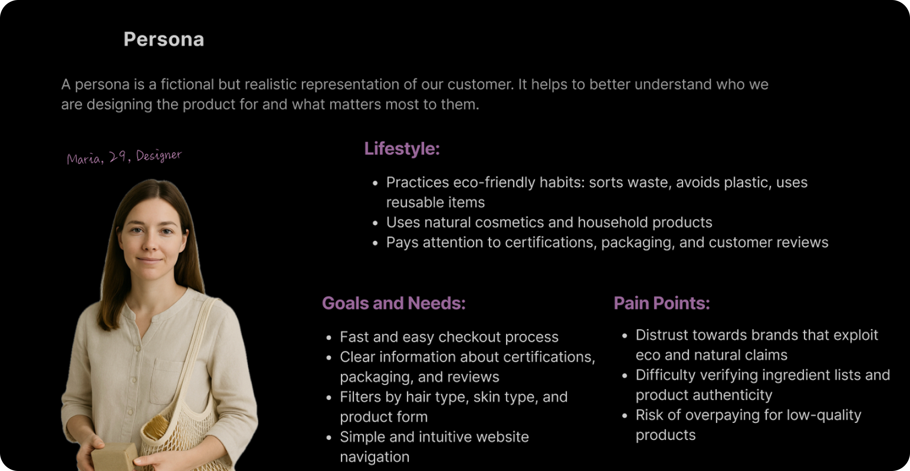
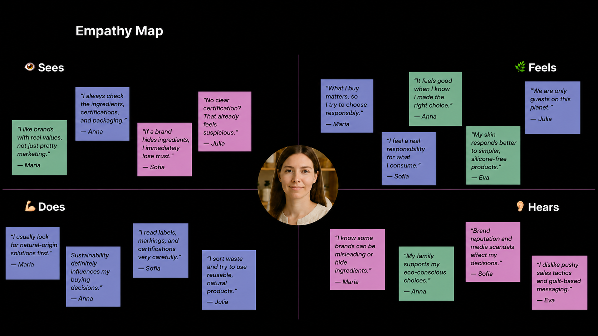
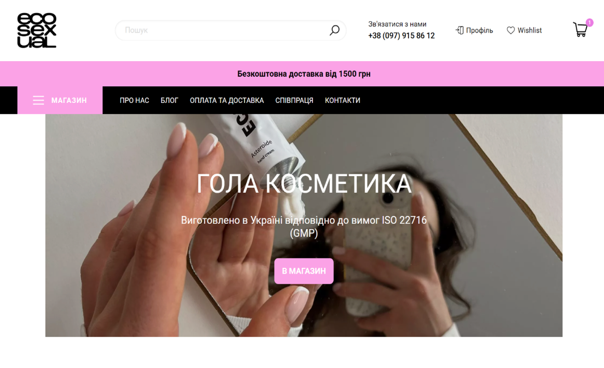
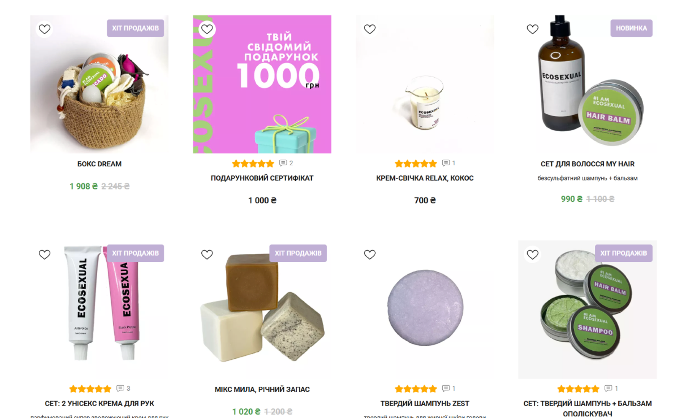
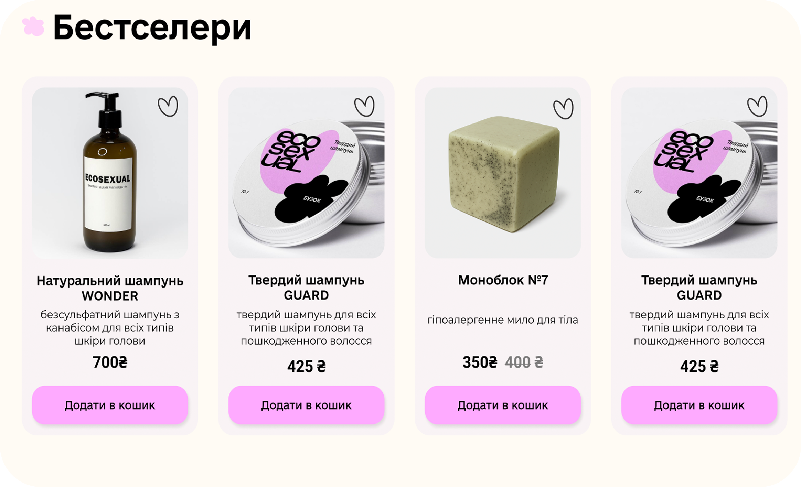
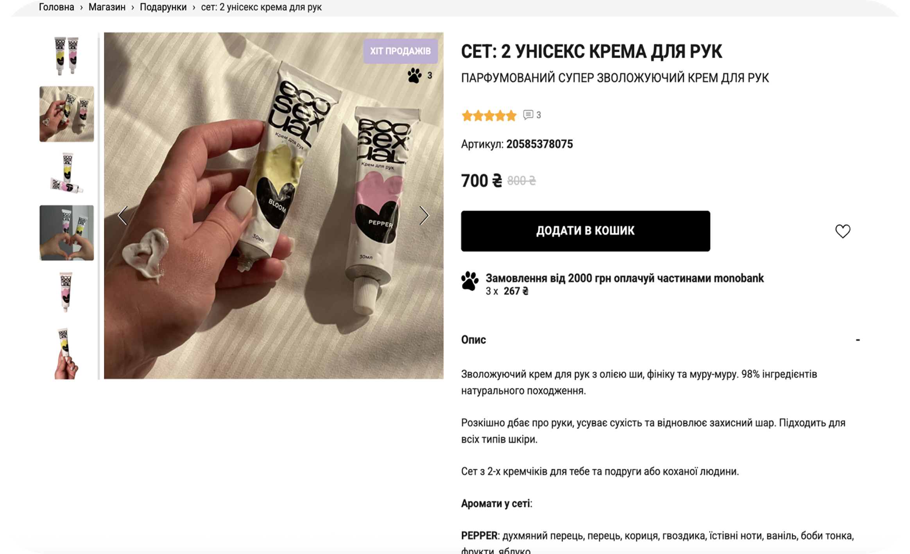
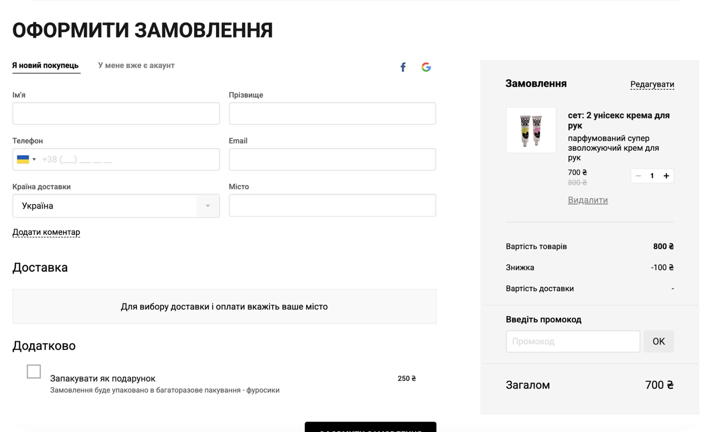
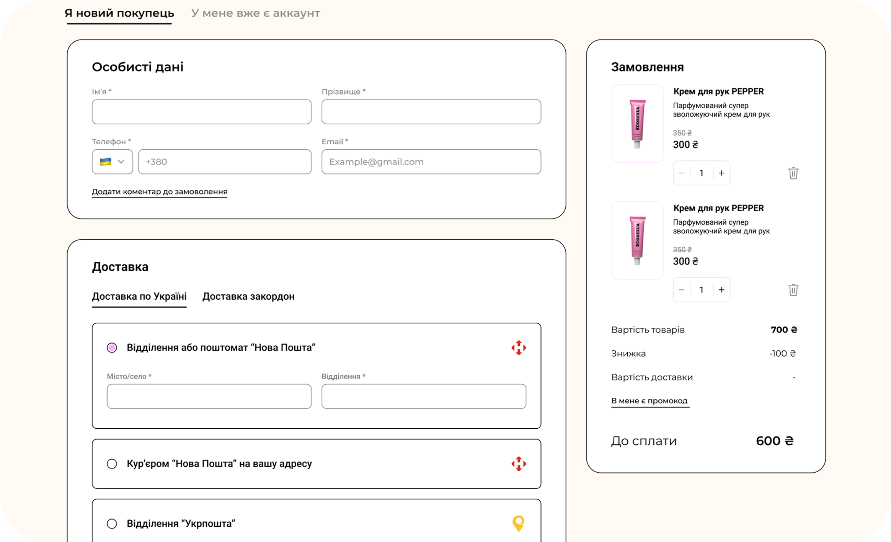

Ecosexual
About
project
Ecosexual is a Ukrainian eco cosmetics brand. Founded by two women in 2021, it is a social business that promotes conscious and environmentally responsible living. The brand creates natural, low-waste cosmetics and sustainable home products, including package-free cosmetics, upcycled candles and beeswax wraps. Its products combine environmental responsibility, safety and thoughtful visual design.
Collaboration: Group academic project
Year: 2025
Role: Product Designer
Location: Ukraine

Challenge
& goals
One of the biggest challenges was that users frequently abandoned the shopping journey before reaching checkout. The original website also struggled to communicate its value clearly: the phrase “naked cosmetics” did not fully explain what the brand offered, while the hidden desktop burger menu made navigation unnecessarily difficult. Product cards lacked important information and required extra clicks, the visual style was inconsistent, and several useful features were unavailable because of platform limitations.
Our goal was to make the shopping experience clearer, more trustworthy and easier to navigate. We focused on improving the homepage messaging, information hierarchy, navigation, product cards and overall visual consistency, while working within the technical limitations of the existing platform.

Responsibilities
This was a collaborative academic project completed by a team of three product designers. Together, we aimed to reduce friction in the shopping journey and make Ecosexual’s products, values and environmental message easier to understand.
My contribution
I led the UX audit of the existing website, identified key usability and communication issues, and explored the limitations of the Shop Express platform. My main design work focused on improving the homepage messaging, desktop navigation, product cards and overall browsing experience. I also contributed to the information hierarchy, visual consistency and final interactive prototype.
Designer 2 contribution
The second designer focused on competitor research, analysing the existing content and helping define the new information architecture. They also contributed to organising product information and improving how the brand’s values were communicated throughout the website.
Designer 3 contribution
The third designer focused on the visual direction, UI consistency and component styling. They helped refine the appearance of key screens and prepare the final designs for the prototype and project presentation.
Shared work
Together, we defined the main problems, prioritised improvements, reviewed each other’s design decisions and combined our work into one consistent experience. We collaborated on user flows, design iterations, the final prototype and the presentation of the proposed solution.

UX Research
& Insights
The website had a low conversion rate, but the reason was unclear. Working with two other designers, we used user interviews, usability testing and a heuristic review to understand why users were leaving before checkout.
Unclear positioning
Users did not immediately understand what Ecosexual offered or what “naked cosmetics” meant.
Difficult product discovery
The hidden desktop menu and missing filters made it harder to find relevant products.
Extra effort
Product cards lacked key information, forcing users to make additional clicks before understanding a product.
Content and consistency
Long text sections slowed users down, while inconsistent visuals reduced clarity and trust.
These findings showed that the conversion problem was connected to unclear messaging, difficult product discovery and unnecessary friction throughout the shopping journey.
Learning through
collaboration
Observing the other designers’ interview sessions helped me improve my research approach. One designer used follow-up questions to uncover why participants behaved in a certain way, while another paid close attention to hesitation and non-verbal reactions.
I learned to ask neutral follow-up questions, listen beyond the first answer and compare what users said with what they actually did.
User Persona

Maria represents a typical Ecosexual customer. Based on recurring patterns from user interviews, she values sustainable choices but expects clear product information, simple navigation and reassurance that the products are genuinely high-quality and environmentally responsible.
Empathy Map

The empathy map summarises recurring themes from user interviews and usability testing, including what users think, feel, say and do while shopping for sustainable products.
Final Design (UI)
Before

- Maria may not understand what “naked cosmetics” means.
- The hidden desktop menu makes product discovery harder.
- The hero does not quickly explain the brand’s value.
After

Clear messaging and visible navigation help Maria understand the brand and start browsing immediately.
Before

1- Without filters, Maria has to scan every product manually.
- Inconsistent images can reduce confidence in the product range.
- Missing details and actions create unnecessary extra clicks.
After

Filters, consistent cards and visible actions help Maria compare products with fewer steps.
Before

1- Important information is not clearly prioritised.
- Maria may struggle to quickly find ingredients and product suitability.
- Dense content and weak hierarchy make the page difficult to scan.
After
Clear hierarchy and accessible product details help Maria make a more confident decision.
Before

1- Repeated elements may make Maria unsure what she has completed.
- Delivery and account options are not clearly grouped.
- The weak hierarchy makes checkout feel longer and more complicated.
After

Grouped sections and clearer options make the checkout process easier to understand and complete.
What I learned
Research before redesign
A low conversion rate shows that a problem exists, but not why. User interviews and usability testing helped us identify the real barriers before making design decisions.
Clarity builds trust
I learned that strong visuals are not enough when users do not understand the brand, product benefits or ingredients. Clear messaging is a key part of the user experience.
Reduce unnecessary effort
Visible navigation, useful product information and fewer clicks can make users feel more confident and move through the shopping journey more easily.
Design within constraints
Working with the limitations of the Shop Express platform taught me to prioritise realistic improvements and balance user needs with technical feasibility.
This project strengthened my ability to connect research findings with practical design decisions and explain the reasoning behind my work.